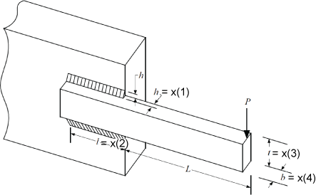

Engineering Problems
MetaheuristicsAlgorithms.Engineering_F7 — FunctionF3(x::Vector{Float64}) -> Float64Welded Beam Design Optimization.
Minimizes cost of a welded beam subject to constraints on shear stress, normal stress, deflection, and geometry.
Problem Source
This problem is a classical constrained engineering design problem used in various metaheuristic algorithm papers.
Variables
x[1]: Thickness of weldx[2]: Length of welded jointx[3]: Height of the beamx[4]: Width of the beam
Constraints
Seven nonlinear inequality constraints.
Returns
- Penalized objective function value (Float64)
